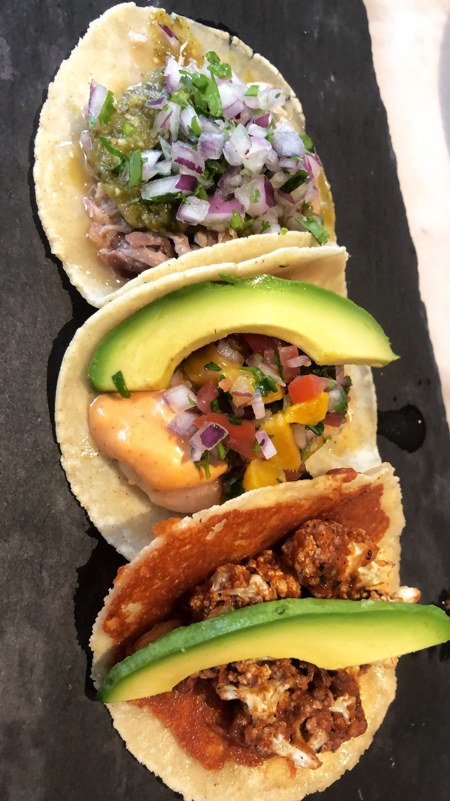
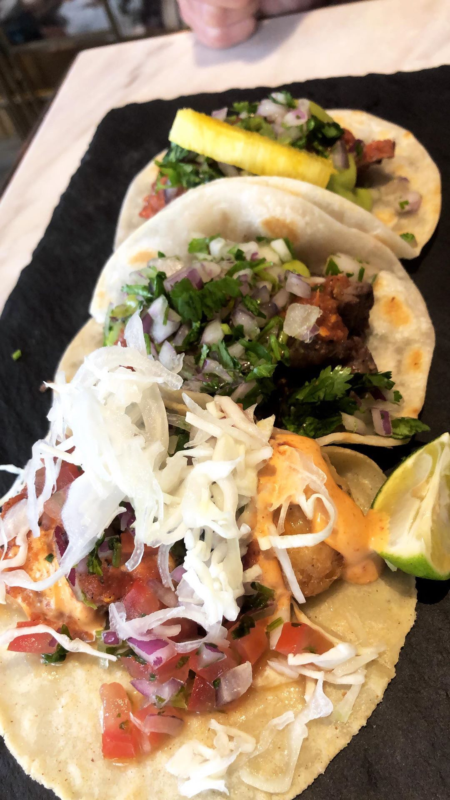
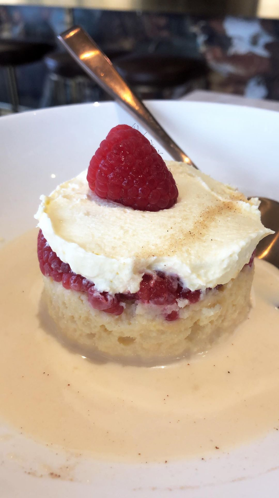
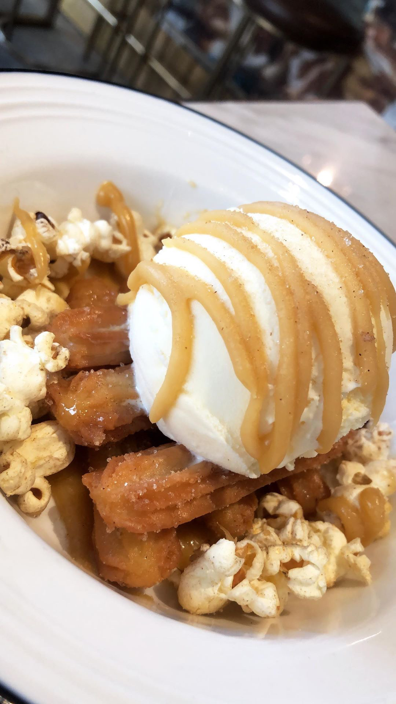

Latin-American Food
Latin American cuisine is the typical food common to the countries and cultures of Latin America. The spices used in the dishes are what make Latin American flavors so distinct. One of the more popular Latin American cuisines in Hong Kong is Mexican food, which more so hails from the Central American region.
Mexican
11 Westside
Location:
   
11 Westside is opened by L.A.'s very own Taco King, Esdras Ochoa, who started his career opening his taco truck in LA. After visitng Hong Kong and receiving an offer from his new business partners, he opened up 11 Westside in Kennedy Town. The restaurant has seating indoors and outdoors, with a "speakeasy" at the back of the restaurant. Not only are the tacos there made from traditional ingredients, but Ochoa also learned to use some local ingredients to create specials like pork-belly taco.